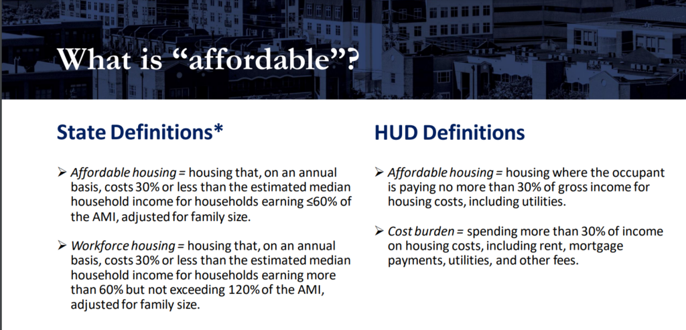
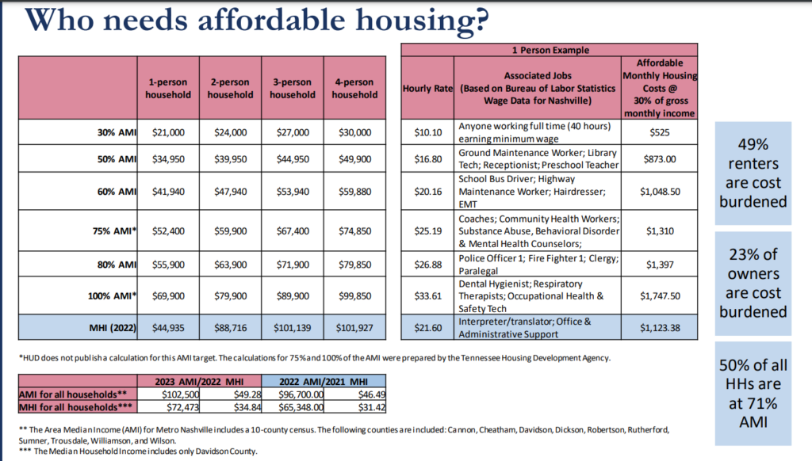
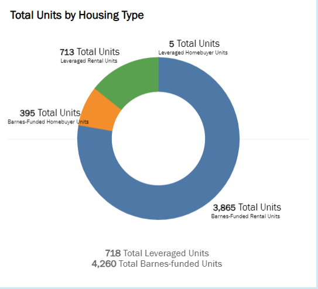
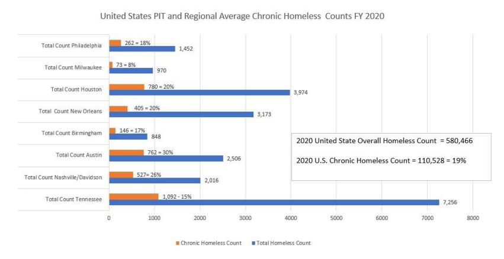
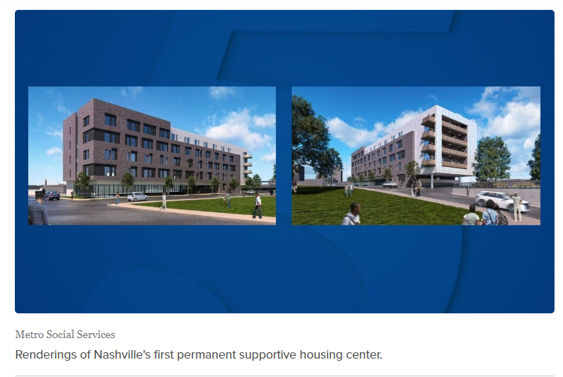
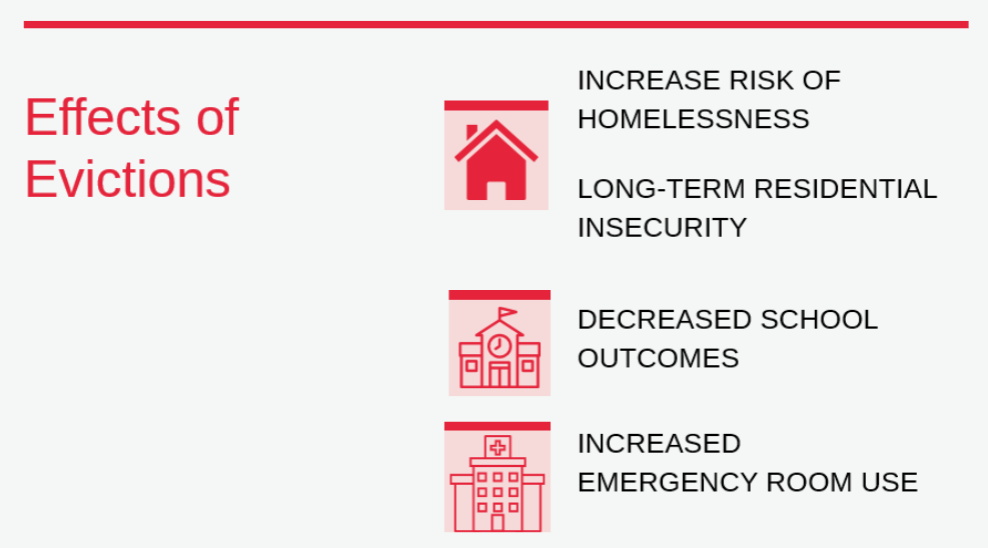

Housing in Nashville: Challenges, Solutions, and Future Directions
Hello, everyone! Thank you for joining us for another crucial discussion on our city’s budget and our community safety. Recently, housing and homelessness have become critical issues in Nashville, affecting countless residents. The urgency of these matters has prompted us to explore sustainable solutions and strategies to ensure that every Nashvillian has a roof over their head. According to recent statistics, over 50% of renters in Nashville are cost-burdened, paying more than 30% of their income on housing.
Today, I want to discuss the ongoing efforts and challenges in addressing housing and homelessness in Nashville. This issue is crucial because housing stability is the foundation of a healthy, thriving community. Our conversation features insights from esteemed guests who have devoted their lives to tackling these challenges. Let me introduce you to our panelists.
MY PANELISTS
Angie Hubbard
Angie is the Director of Housing for the Metro Nashville Planning Department. Since the department’s inception in January 2022, Angie has spearheaded numerous initiatives aimed at increasing affordable housing and addressing the systemic issues that contribute to housing insecurity in Nashville.
April Calvin
April is the Director of the Office of Homeless Services. As the leader of a department that celebrated its first anniversary on July 1, April oversees efforts to provide resources, support, and housing solutions to Nashville’s homeless population.
DarKenya Waller
DarKenya serves as the Executive Director of the Legal Aid Society of Middle Tennessee and the Cumberlands. With a long history of providing free civil legal services to low-income individuals, DarKenya’s work is critical in preventing evictions and ensuring that vulnerable populations have access to legal representation.
Addressing Affordable Housing

Angie Hubbard began the conversation by highlighting the significant strides made by the Housing Division. Since its creation, the division has focused on ensuring housing security for all Nashvillians. Angie then discussed four resources available to Nashvillians on the Metro Housing website.
State of Housing in Nashville:
The conversation around housing often starts by defining affordable housing. Housing affordability is defined by the percentage of income that a household spends on housing. If the cost of housing (rent or mortgage) is less than 30% of income, then for that household, housing is considered affordable. Spending over 30% of income on housing means the household is cost-burdened, while a cost of over 50% means the household is severely burdened.
Another term used in relation to housing is the Area Median Income (AMI). The AMI is calculated annually for each metropolitan area and non-metropolitan county and is used by the US Department of Housing and Urban Development (HUD) to determine eligibility for certain federal housing programs. AMI is the midpoint of a region’s income distribution, meaning half of the families in a region earn more and half earn less than the median.
Because of the increase in AMI, there is often a mischaracterization of who utilizes these resources. The Housing Department page breaks down this misinformation to show that those in need of housing are the ones keeping our city going. These are hardworking people, many of whom work in our education system, hospitality industry, and as first responders

Barnes Fund
One of the key programs Angie discussed is the Barnes Housing Trust Fund. Created in 2013, this fund has grown significantly thanks to continuous investment by the Metro Council. The fund primarily supports non-profit organizations in constructing and preserving affordable housing. Despite these efforts, Angie emphasized that Nashville still faces a deficit in affordable housing units, with a need for 50,000 units by 2030. Since its inception, the program has funded 718 total leveraged units and 4,260 total Barnes-funded units.

Unified Housing Strategy
Angie highlighted the need for public input in the unified housing strategy. The division seeks to capture diverse housing journeys to inform policies and create effective tools for housing security. Public engagement is crucial, and upcoming community meetings will provide opportunities for residents to share their experiences and suggestions. For more information or to attend one of the UHS countywide listening sessions, click here.
Angie also mentioned that the unified housing strategy is not just about building new housing but also about preserving existing affordable housing. The division is working on initiatives to prevent displacement and gentrification, ensuring that long-term residents can remain in their homes. This includes providing resources for home repairs and improvements, as well as offering support for property tax relief programs for low-income homeowners.
Development Tools
Angie highlighted various tools and incentives available to developers to encourage the construction of affordable housing. These include tax abatements, grants, and technical assistance for non-profit organizations. She stressed the importance of public-private partnerships in tackling the housing crisis and called on for-profit developers to collaborate with the city to increase the supply of affordable housing. Twenty percent of Barnes funds are set aside for small nonprofit organizations to help them get their foot in the door in the development space.
Fair Housing Act
Under the Housing Division page, the final link leads to the definition of housing discrimination (including the Fair Housing Act and protected characteristics) and resources that community members can use if they feel they are being discriminated against. There is information for contacting someone for more information on tenant rights, as well as information on Nashville’s property standards.
Finally, the Housing Division website include a dashboard that provides critical data on affordable housing units, funding sources, and ongoing projects. To access the Housings Department website and dashboard, click here.
Homelessness and Support Services
April Calvin provided an overview of the initiatives led by the Office of Homeless Services. She highlighted the urgent need for more permanent supportive housing, noting that many individuals experiencing homelessness in Nashville have been without stable housing for an average of five years.

The department’s approach includes a combination of immediate support through encampment strategies and long-term solutions like the Strobel House, Nashville’s first permanent supportive housing project.
Coordinated Entry
A new initiative to streamline access to homelessness prevention resources and support services. April emphasized that the coordinated entry line will serve as a central point of contact for individuals seeking assistance, ensuring that they are connected to the appropriate resources quickly and efficiently. The department collaborates with over 45 service providers to offer a comprehensive range of services, including emergency shelter, case management, and housing placement. As of last year, this effort and the 45 agencies resulted in housing 1,927 individuals—10% of whom came from unsheltered encampments. The unified approach ensures that resources are used effectively and that individuals receive the support they need to transition out of homelessness.
Housing First
One of the department’s key strategies is the Housing First model, which prioritizes providing permanent housing to individuals experiencing homelessness without preconditions. This approach has been shown to be effective in reducing homelessness and improving outcomes for individuals. April shared that the Strobel House will be a cornerstone of this strategy, offering not only housing but also wraparound services to support residents in maintaining their housing stability.
Low Barrier Housing Collective
This is a collective of service providers, landlords, property managers, and nonprofit partners who are willing to provide housing opportunities for our communities experiencing homelessness. Noting that it changes from month to month, there are 186 partnering parties willing to collaborate through sign-on bonuses, landlord mitigation funds, a wide applicant pool, and opportunities for landlords to ensure their units are always filled.
Strobel House
The Strobel House is Metro’s first permanent supportive housing center. Set to open in July, this project will provide stable housing for individuals experiencing chronic homelessness. April shared that the Strobel House will offer not only housing but also comprehensive support services, including case management, mental health services, and job training, to help residents achieve long-term stability. Named after the late Rev. Charles Strobel, the center will have five floors and 90 units. Rev. Strobel championed supporting the city’s unhoused population and founded Room in the Inn, which provided winter emergency shelters.

Preventive Programs for Homelessness
April discussed the importance of preventive measures to reduce the inflow of individuals into homelessness. Programs like the coordinated entry line and financial assistance networks aim to address issues before they lead to homelessness. By providing timely support, these programs help individuals maintain their housing stability.
April emphasized the role of prevention in the city’s overall strategy to combat homelessness. She highlighted the success of the Financial Assistance Network (FAN), which provides emergency financial assistance to individuals at risk of losing their homes. This program has helped thousands of residents avoid eviction and maintain their housing stability. April called for increased funding and support for preventive programs to address the root causes of homelessness.
Legal Support and Eviction Prevention
DarKenya Waller emphasized the importance of legal representation in preventing evictions. The Legal Aid Society’s Eviction Right to Counsel program has been instrumental in providing free legal services to tenants facing eviction. DarKenya shared that, prior to this program, only 1% of tenants had legal representation in eviction proceedings, compared to 99.8% of landlords. This significant imbalance often resulted in tenants losing their homes without a fair chance to present their case.
The program not only offers court representation but also engages in community education and outreach. Since its inception, the Legal Aid Society has conducted over 300 “Know Your Rights” events, helping tenants understand their legal protections and responsibilities. DarKenya stressed the importance of early intervention, noting that many evictions can be prevented if tenants seek legal assistance as soon as they receive a notice to vacate
DarKenya noted that the most affordable housing is the housing that you are in, and it truly becomes costly when you have to move housing routinely. The goal is to keep clients in their housing if that is their desired outcome. The ERTC program has achieved a 95% success rate in achieving the desired outcomes for clients
DarKenya also highlighted the broader impact of eviction on families and communities. Evictions can lead to a cycle of instability, affecting children’s education, mental health, and overall well-being. By providing legal support and advocacy, the Eviction Right to Counsel program aims to break this cycle and ensure that families have a fair chance to stay in their homes.

Legal Representation and Tenant Rights
Unfortunately, people face evictions not because they are not working but because their income is too low to support their needs. This is particularly true as the cost of living continues to rise while wages stagnate. Most folks facing evictions are described as Assets Limited, Income Constrained, Employed (ALICE).
DarKenya reiterated the importance of legal education and representation. She stressed that understanding tenant rights can prevent evictions and ensure fair treatment. The Legal Aid Society’s resources, including self-help guides and multilingual support, are essential tools for tenants navigating legal challenges.
DarKenya also discussed the need for systemic changes to protect tenant rights. She called for stronger tenant protection laws and increased funding for legal services to ensure that all tenants have access to legal representation. DarKenya emphasized that legal advocacy is crucial in addressing the power imbalance between landlords and tenants and ensuring that all residents have a fair chance to secure stable housing.
Q & A
Can for-profit developers get access to Barnes Fund grants?
A for-profit developer can work in partnership with a non-profit; however, the nonprofit must have 51% control of the deal. The applicant for the project must be a nonprofit.
What about the unused fund balance in the Barnes Fund?
Barnes Fund is a special fund—it cannot be spent in the year it was awarded since projects take multiple years to complete. Payment is made on a reimbursement basis based on the percentage of completion to ensure projects are being completed. Therefore, the Barnes Fund balance represents commitments for projects in progress and cannot be spent.
What resources are available for those still in encampments?
April detailed the ongoing encampment strategies, including service fairs and resource events. These initiatives aim to provide immediate support while working towards long-term housing solutions. April highlighted the importance of collaboration with non-profit organizations and community partners in delivering these services and ensuring that individuals in encampments have access to the resources they need. There is an encampment strategy—using a housing-first approach to now close and rehouse four complete encampments via temporary, permanent, or family reunification programs.
Folks should call 615-862-6444 to get resources for any families experiencing homelessness. Outreach workers can be reached by calling 615-862-6992 for individuals. You can also connect to this office via HubNashville.
How can individuals access legal support before reaching the eviction stage?
DarKenya encouraged individuals to reach out to the Legal Aid Society or use resources like 211 for early intervention. Preventive legal advice and mediation services can help resolve issues before they escalate to eviction. She emphasized the importance of educating tenants about their rights and providing them with the tools they need to navigate the legal system effectively.
Can I stop paying my rent, if my landlord fail to complete a repair to my apartment?
No. In Tennessee, you must continue paying your rent to avoid eviction, even when the landlord has not completed a repair. To know your rights, contact Legal Aid.
Community Impact and Personal Reflections
These programs have had a profound impact on our community. For instance, the Strobel House will offer much-needed stability to individuals who have been without a home for years. Similarly, the Eviction Right to Counsel program has prevented countless evictions, ensuring families remain housed and children can continue their education without disruption.
Angie reflected on the success of the Barnes Housing Trust Fund, sharing stories of families who have benefited from affordable housing developments supported by the fund. She emphasized the importance of continuing to invest in these programs to create more success stories and ensure that all Nashvillians have access to safe, affordable housing.
April shared touching stories of individuals who have been able to move into permanent housing through the coordinated efforts of the Office of Homeless Services and its partners. These stories highlight the transformative impact of stable housing on individuals and families.
Conclusion and Call to Action
In conclusion, addressing housing and homelessness in Nashville requires a multifaceted approach involving community-led initiatives, substantial investment, and collaborative efforts. The Housing Division, Office of Homeless Services, and Legal Aid Society are all working tirelessly to create a Nashville where everyone has access to stable housing. However, these efforts require continuous support and funding.
I encourage you all to support these programs and continue to advocate for sustained funding. By working together, we can create a community where every resident has a safe and stable place to call home. Let’s continue to push for policies that promote affordable housing, support homeless individuals, and protect tenants’ rights.
RESOURCES
4. 211- Helpline 5. Metro Action Commission 6. Where to Turn in Nashville
7. Financial Assistance Network
If you missed this important conversation on housing or want to see Angie’s demonstration about accessing the Housing Division website click the link below.
NEXT BUDGET CONVERSATION
Join CM Porterfield and me this Saturday at 1:30 pm at Inglewood Library as we take a close look at her substitute. Space is limited, so we encourage folks to join live on my Facebook page. Join us today at 12:30 on Facebook live at https://www.facebook.com/CouncilmemberZulfatSuara/ with your questions & comments.

Engagement
Please continue to stay engaged and share your thoughts and ideas about housing and other important issues facing our city. Your input is invaluable. Together, we can ensure a bright and sustainable future for our great city. Attend community meetings, participate in public discussions, and reach out to your council members to voice your support for the Housing Division’s initiatives.
Acknowledgments
Thank you for your continued support and for taking the time to read this post. Special thanks to Angie Hubbard, April Calvin, and DarKenya Waller for their invaluable contributions to this discussion and their unwavering dedication to improving housing stability in Nashville.
Best,
Zulfat